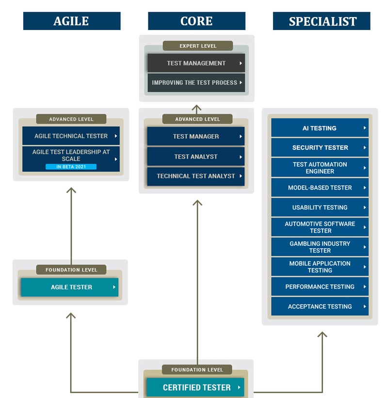

ISTQB Certifactions Plan

FL
-
Foundation Level - CTFL:
- About The ISTQB® Certified Tester Foundation Level -
CTFL: The Foundation Level qualification is aimed at anyone involved in software testing. This includes people in roles such as testers, test analysts, test engineers, test consultants, test managers, user acceptance testers and software developers.
This Foundation Level qualification is also appropriate for anyone who wants a basic understanding of software testing, such as project managers, quality managers, software development managers, business analysts, IT directors and management consultants. Holders of the Foundation Certificate will be able to go on to a higher level software testing qualification.
- The ISTQB® Certified Tester Foundation Level (CTFL) is one level
-
There are two versions of the CTFL :
-
CTFL v3.1
- CTFL v4.0 (New at 2023)
-
Advanced Level - CTAL:
- About The ISTQB® Certified Tester Advanced Level - CTAL: The CTAL is aimed at people with experience in software testing. This includes roles as above. It is also appropriate for anyone who wants a deeper understanding of software testing. To apply for CTAL examination, candidates must already hold the CTFL.
- The ESTB provides two levels of the ISTQB® Certified Tester Advanced Level (CTAL):
1. The ISTQB® Certified Tester Advanced Level - Test Manager
(CTAL-TM)
2. The ISTQB® Certified Tester Advanced Level - Test Analyst
(CTAL-TA)
3. The ISTQB® Certified Tester Advanced Level - Technical Test Analyst
(CTAL-TTA)
AGILE
-
Foundation Level:
- About The ISTQB® Certified Agile Tester Foundation Level -
CTFL-AT: In general, a Certified Tester Foundation Level - Agile Tester is expected to have acquired the necessary skills to working effectively within an Agile team and environment.
- The ISTQB® Certified Agile Tester Foundation Level is one level
-
Advanced Level:
- About The ISTQB® Certified Agile Technical Tester -
CTAL-ATT: The Advanced Level Agile Technical Tester qualification is aimed at people who have already achieved an advanced point in their careers in software testing and wish to develop further their expertise in technical testing aspects in an agile context. The modules offered at the Advanced Level cover a wide range of practical testing topics.
- The ISTQB® Certified Tester Advanced Level Agile Technical Tester is one level
SPECIALIST
-
Foundation level - Mobile Application Tester (CTFL-MAT):
- The certification for the Mobile Application Testing Foundation Level is intended for professionals who are working with mobile technology. The certification provides an insight into methods, techniques and tools a professional may use to test mobile applications. It is also for professionals who are planning to start implementing mobile projects or are working within companies that plan to do so. The certification provides an advantage for those who would like to know the required mobile project activities, roles, methods, and methodologies specific to their role.
-
Certified Tester Foundation Level Performance Testing (CTFL-PT):
- The Foundation Level Performance Testing qualification is aimed at testers who already hold the Software Testing Foundation and wish to develop further their expertise in Performance Testing
-
Certified Tester Automotive Software Tester (CT-AuT):
- The ISTQB® Certified Tester Automotive Software Tester (CT-AuT) certification focuses on the specific requirements for "testing E/E systems" in the automotive environment on the basis of established standards (Automotive SPICE®, ISO 26262, AUTOSAR®, etc.). It also covers testing in virtual environments (including XiL), and automotive-specific static and dynamic test techniques,
-
Certified Tester Artificial Intelligence Testing (CT-AI):
- The Certified Tester AI Testing (CT-AI) qualification is aimed at people who are seeking to extend their understanding of artificial intelligence and/or deep (machine) learning, most specifically testing AI based systems and using AI to test. To achieve the CT-AI certification, candidates must hold the ISTQB® Certified Tester Foundation Level (CTFL) certificate.
-
Advanced Level Security Tester (CTAL-SEC):
- The Advanced Level Security Tester qualification is aimed at people who have already achieved an advanced point in their careers in software testing and wish to develop further their expertise in security testing. The modules offered at the Advanced Level cover a wide range of testing topics.
- The ISTQB® Certified Advanced Level Secuirty Tester is one level
-
Advanced Level - Test Automation Engineer (CTAL-TAE):
- The Advanced Level Test Automation Engineer qualification is aimed at people who have already achieved an advanced point in their careers in software testing and wish to develop further their expertise in automation testing. The modules offered at the Advanced Level cover a wide range of testing topics.
- The ISTQB® Certified Advanced Level Automation Engineer is one level